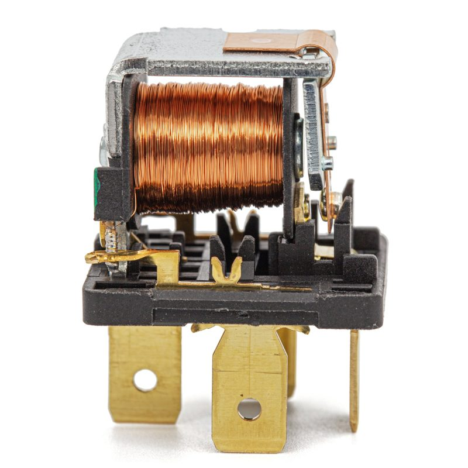
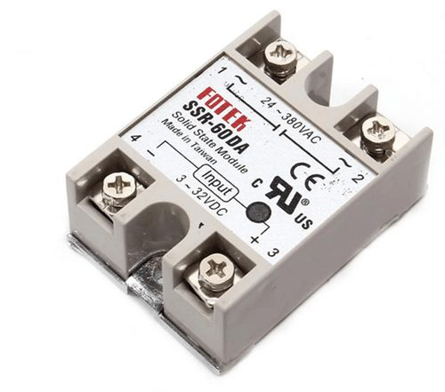
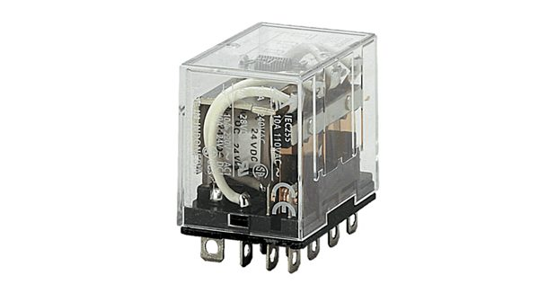
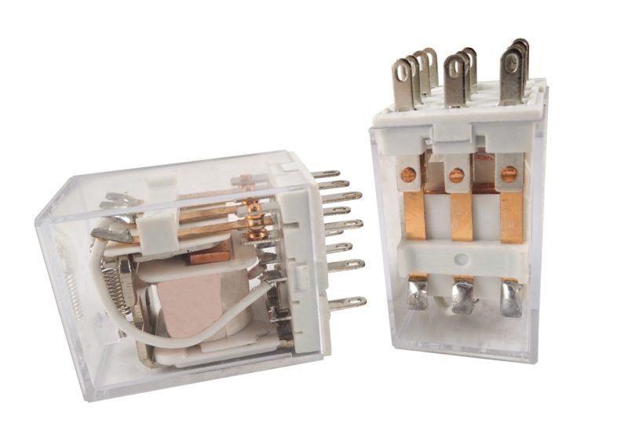
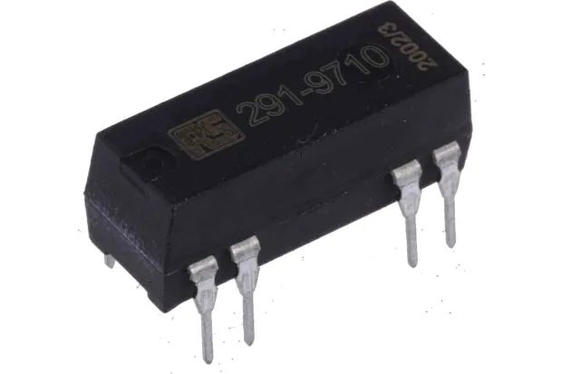
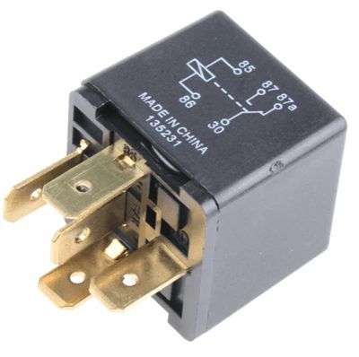
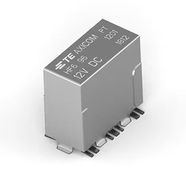
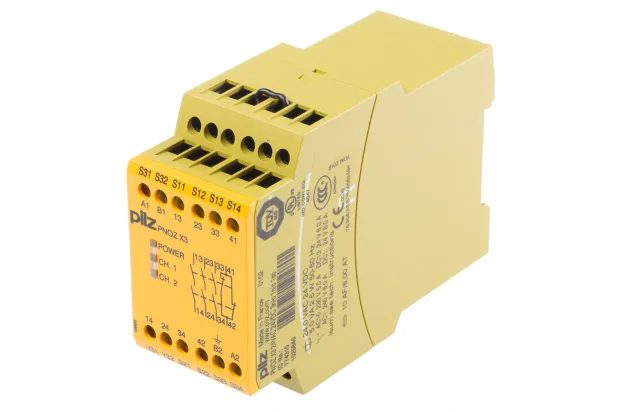
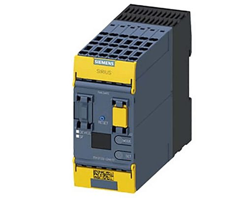
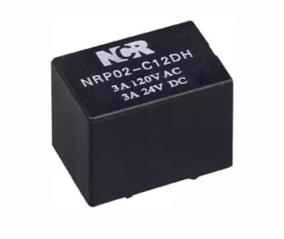

繼電器是什麼？
用「小訊號」控制「大電流」的開關
給第一次接觸繼電器的你：看懂它的構造、怎麼動、有哪些種類、怎麼安全使用。
內容全部取自本課的 LLM Wiki（6 份資料：S1～S6），每頁下方都標有對應的 Wiki 頁面與來源編號。
操作方式：← → 鍵、下方按鈕或左右滑動換頁。
1. 它是什麼？
定義、為什麼需要它
2. 長什麼樣？怎麼動？
構造、運作原理
3. 接點怎麼看？
NO／NC／COM、電路符號
4. 有哪些種類？
EMR 與 SSR、各種繼電器
5. 怎麼安全使用？
規格、電弧、反電動勢、測試
6. 用在哪裡？
生活與工業應用、小測驗
繼電器的定義是什麼？
用小功率的控制訊號，去切換高電壓、大電流電路的「電控開關」。S1 S4 S6
名字的由來
relay 來自法文 relais，意思是「傳遞」──把控制訊號「接力」傳到另一個電路。S4
它還能做到
- 控制端和負載端沒有導線直接相連（電氣隔離），保護控制電路和人S1 S3 S4
- 一個訊號同時控制多組電路S1 S5
- AC、DC 都能切換S4 S5
比喻：Arduino 的一個小腳位（小訊號），透過繼電器，就能開關一台用插座供電的大電器。
手動開關、電晶體也能開關電路，為什麼還需要繼電器？
繼電器能切換交流大負載、又有電氣隔離；實務上常和電晶體一起用。S1 S2
手動開關
要人去按；體積大、速度慢、能切的電流小。S1
電晶體
也能用小電流控制大電流，適合小型直流負載（例如小馬達）。S2
繼電器
能切換交流大負載（例：AC 250 V／10 A），也能切 DC；而且有電氣隔離。S1 S2
實務上：兩者常常「一起用」
電流太小
放大去推線圈
切換大負載
Arduino 腳位的電流不夠直接推動繼電器線圈，所以中間要加電晶體。S2
繼電器在控制系統裡扮演什麼角色？
它是「執行器」：把電訊號變成接點的實際動作。S1
感測器＝輸入
感知外界（溫度、光、按鈕…）。S1
執行器＝輸出
把電訊號變成實際動作。繼電器用電訊號讓接點動起來，所以是電氣執行器。S1
輸入
判斷
輸出／執行器
燈、馬達、加熱器
冷知識：電磁閥（solenoid）的柱塞如果拿去推動接點，就變成了繼電器──兩者是親戚。S1
一顆電磁繼電器（EMR）裡面有什麼？
線圈、鐵芯／軛鐵、銜鐵、彈簧、接點；其中線圈是唯一的動力來源。S1 S4

圖片取自：Schneider Electric〈What is Relay〉連結
| 零件 | 作用 |
|---|---|
| 線圈 | 通電產生磁場，唯一的動力來源S1 S4 |
| 鐵芯／軛鐵 | 加強並導引磁場S1 S4 |
| 銜鐵 | 被磁力吸動的金屬片，把磁力變成動作S1 S4 |
| 彈簧 | 斷電後把銜鐵拉回原位S1 S4 |
| 接點 | 真正開關外部電路的金屬片S1 S4 |
| 支點、推卡 | 銜鐵轉動的軸心；把動作傳給接點S1-F2 S5-F1 |
小提醒：彈簧不一定是一圈一圈的。上面這顆是銅片彈簧，有些繼電器用螺旋彈簧（見圖鑑頁）。〔圖片觀察：S3-P1、S3-P2〕
它是怎麼動起來的？（按按鈕試試看）
線圈通電吸下銜鐵、接點切換；斷電後彈簧把它拉回原位。S1 S3 S4
- 產生磁場：電流流過線圈，鐵芯變成電磁鐵。S3 S4
- 接點切換：磁力把銜鐵吸下來，COM 從 NC 離開、改接 NO。S3 S4
- 斷電復位：線圈斷電，彈簧把銜鐵拉回，COM 回到 NC。S1 S3 S5
磁力大小取決於線圈電流和線圈圈數。S4
動作時會發出「喀」一聲，那是接點在動。S2 S4
示意圖依 S1-F2、S5-F1 重新繪製並簡化。
首先，要認識三個名詞：NO、NC、COM
它們分別是什麼意思？
看的都是「沒通電」時的狀態：NO 平常斷開、NC 平常閉合，COM 在兩者之間切換。S1 S4 S6
電路圖把繼電器拆成兩部分：線圈（方框或圓）＋接點（開關），虛線代表兩者機械連動。S4 依 S1-F1 重新繪製。
| 代號 | 沒通電 | 通電後 |
|---|---|---|
| NO 常開 | 斷開 | 閉合S1 S4 S6 |
| NC 常閉 | 閉合 | 斷開S1 S4 S6 |
| COM 共同端 | 在 NO 與 NC 之間切換的那一端S4 S6 | |
什麼時候用哪一個？S6
- NO：「觸發才啟動」──警報、照明控制
- NC：故障安全、監控電路──急停系統
- CO 切換型：電源切換、訊號路徑選擇
想一想：急停為什麼用 NC？因為線路一旦斷掉，效果就和「按下急停」一樣，機器會停下來，比較安全。〔教學推論〕
接著，認識接點組合的代號：SPST、SPDT、DPST、DPDT
這些代號怎麼看？
「刀」是幾組電路，「擲」是每組有幾個出口。S1 S4 S5
依 S5-F3、S1-F1 重新繪製；綠色虛線表示兩組接點同時動作。
| 代號 | 意思 | 生活用途S5 |
|---|---|---|
| SPST 單刀單擲 | 一個電路、一個出口，像普通開關 | 檯燈、風扇、電熱器 |
| SPDT 單刀雙擲 | 一個電路在兩個出口間切換 | 自動切換備用電源 |
| DPST 雙刀單擲 | 一次同時開關兩個電路 | 同時切斷火線與中性線 |
| DPDT 雙刀雙擲 | 兩組 SPDT 由同一線圈控制 | 馬達正反轉 |
另一種寫法：Form A＝SPST-NO、Form B＝SPST-NC、Form C＝SPDT；「2 Form A」＝兩組常開接點。S1
固態繼電器（SSR）是什麼？
用半導體切換、沒有會動零件的繼電器。S1 S4 S5
依 S1-F6 重新繪製並簡化。
優點
- 切換快、壽命長S1 S4 S5
- 沒有電弧、靜音S1 S4
- 可由 IC、微控制器直接驅動S1
缺點
- 導通有 1–2 V 壓降 → 會發熱，要裝散熱片S1 S4
- 關閉時仍有微小漏電流S1
- 比較貴S1 S4

圖片取自：ariat-tech.tw 連結
EMR 和 SSR 差在哪裡？
先從生活中的例子感受一下：
EMR 的生活例子
Arduino 專題用繼電器開關馬達或電器，一動作就聽到「喀」一聲──那是接點真的在動。S2
適合：切換不頻繁、價格要便宜的場合S4 S5
SSR 的生活例子
舞台燈光調光、加熱系統，需要快速、頻繁地開關，而且要安靜。S1 S5
適合：高速、頻繁切換的場合S4 S5
為什麼會這樣？差在「用什麼切換」：EMR 靠實體接點，SSR 靠半導體。S5
下面所有差異，都是從這一點延伸出來的。
| 比較 | 電磁繼電器 EMR | 固態繼電器 SSR |
|---|---|---|
| 速度 | 較慢S1 S4 | 快S1 S4 S5 |
| 壽命 | 接點會磨損S1 S4 | 長，沒有機械磨損S1 S4 S5 |
| 聲音 | 「喀」一聲S2 S4 | 靜音S4 S5 |
| 電弧 | 有S1 | 沒有S1 |
| 維護 | 需要S4 | 少S4 |
| 發熱 | 少，導通壓降很小S1 S4 | 多，要散熱片S1 S4 |
| 關閉時 | 完全斷開S1 | 有微小漏電流S1 |
| 價格 | 較便宜S4 S5 | 較貴S1 S4 |
為什麼繼電器有那麼多種？
因為可以從「切換方式、用途、接點」三個角度來分類。S4 S5 S6
依切換方式
EMR（含簧片、栓鎖）
SSR（含零交越型）
S1 S4 S5 S6
依用途
控制型、保護型、安全、車用、高頻
S3 S4 S5 S6
依接點
NO／NC／CO
SPST～DPDT
Form A／B／C
S1 S4 S5 S6
所以同一顆繼電器可以同時有好幾個「身分」：例如一顆車用繼電器，通常也是 EMR，接點可能是 SPDT。〔教學推論〕
依用途來分，控制型和保護型有什麼不同？
不是：控制型「聽命令開關」，保護型「自己判斷危險就斷電」。S3 S4
控制型
用小訊號切換大電流，做自動控制。S3 S4
例：一般 EMR、控制繼電器、SSR
用在：自動化控制面板、工業機械、馬達控制
保護型
偵測電流、電壓，超過門檻就動作，讓斷路器切斷故障區段。S4
- 熱過載繼電器：電流過大 → 熱量累積 → 切斷馬達電源S3 S4
- 差動繼電器：比較兩點電流，有差異就斷電，保護變壓器、發電機S3 S4
- 過電流／過電壓／欠電壓繼電器S4
注意：熱過載繼電器靠的是熱，不是電磁力，原理和前面學的電磁繼電器不同。S3 S4
各種繼電器長什麼樣子？
外型隨用途差很多，但核心都是「小訊號控制大電流」。

取自 ariat-tech.tw

取自 Schneider Electric

取自 RS 台灣

取自 ariat-tech.tw

取自 ariat-tech.tw

取自 RS 台灣

取自 ariat-tech.tw
取自 ariat-tech.tw
還有栓鎖繼電器（斷電後仍維持狀態）、延時繼電器（延遲後才切換）。S4 S5
接觸器和繼電器長得像、原理也一樣，很多人常常分不清楚
其實，接觸器就是專門切換大功率負載的「大型繼電器」。S1 S4
用途
切換三相馬達、照明、電熱等大功率負載。S1 S4
電流
能承受的電流大。S4
體積
較大、結構堅固。S4
滅弧設計：為什麼需要？
切斷電路時產生的電弧會燒蝕接點（見問題 5）。S1接觸器內建滅弧設計S1 S4，用來抑制這種損傷、保護接點。〔推論〕
相較之下，繼電器多用於小功率控制與小訊號切換，電流約從零點幾安培到 20 多安培，體積也小巧得多。S1 S4
關鍵須知 ①：知道怎麼挑規格
- 規格上的數字是有前提的：接點額定通常以 DC 電阻性負載為準，接馬達這類電感性負載時，能扛的電流會大幅降低。S1
- 同一顆繼電器，AC 和 DC 的額定也不一樣。S5
- 線圈電壓要配合控制電路，例 5／12／24 V；Arduino 常用的 SRD-05VDC-SL-C 線圈就是 5 V。S2 S4
- 額定電流、切換容量：接點能安全通過、切換的最大電壓與電流。S4
- 接電感性負載時，要預留餘裕。S1

圖片取自：ariat-tech.tw
關鍵須知 ②：避免接點壞掉
- 接點分開的瞬間電流還想繼續流，會產生電弧燒蝕接點。S1
- 接點電阻因此變大：新品 < 0.2 Ω，燒到 1 Ω 時，10 A 電流就吃掉 10 V，負載可能根本不動。S1
- 嚴重時接點熔接，變成關不掉；切 DC 比切 AC 更傷，因為 AC 每半週過零，電弧會自然熄滅。S1
- 在接點兩端並聯 RC 緩衝電路，吸收電壓尖峰（下圖）。S1
- 選用銀合金接點，延長壽命。S1
- 不要把接點並聯來加大電流：接點不會同時動作，總有一組瞬間過載而熔接。S1
- 同一顆繼電器不要混接高壓 AC 和低壓 DC，要分開用不同繼電器。S1
示意圖依 S1-F4 重新繪製。
關鍵須知 ③：防範線圈斷電時的反向電壓
- 線圈是「電感」：斷電瞬間磁場崩潰，會產生很高的反向電壓。S1
- 這個電壓可能打壞驅動它的電晶體或微控制器（例如 Arduino）。S1
- 在線圈兩端反向並聯飛輪二極體，讓這股能量在二極體裡消耗掉（下圖）。S1 S2
- 用 Arduino 控制時，透過電晶體驅動線圈，不要讓腳位直接推線圈。S2
- 買市售「繼電器模組」，電阻、二極體、電晶體都已內建；買單顆繼電器就要自己接。S2
示意圖依 S1-F5 重新繪製並簡化。
關鍵須知 ④：用症狀確認繼電器是否損壞
接點會燒蝕、甚至熔接，屬於消耗品S1；壞掉時設備會出現這些症狀：
- 馬達不啟動或延遲啟動、燈閃爍、設備時好時壞S5
- 繼電器不吸合、不釋放，接點不切換S6
- 線圈過熱、有焦味S5 S6
- 目視：燒焦、熔化、端子鬆脫S4 S5 S6
- 聽聲音：通電要「喀」一聲；沒聲音→線圈壞或沒供電S5
- 找腳位：對照規格書找線圈與 COM／NO／NCS4
- 量線圈電阻：OL＝線圈斷了；過低＝可能短路；正常值依型號而異S4 S5
- 不通電量接點：COM–NO 不通、COM–NC 通S4
- 通電再量：接點應乾淨切換，卡住就是壞了S5 S6
繼電器用在哪些地方？
從家裡的冰箱、路上的汽車，到工廠和電網都有它。S3 S4 S5 S6
家電
冰箱、冷氣、洗衣機、微波爐：切換壓縮機、加熱元件S3 S4 S5
汽車
頭燈、起動馬達、燃油泵、冷氣、門鎖S4 S5 S6
工業自動化
控制面板、馬達、電磁閥、重型機械S3 S4 S5
電力系統
偵測故障、觸發斷路器，保護變壓器和發電機S3 S4 S5
安全與警報
急停、防護門、光幕；入侵時觸發警報與燈光S5 S6
照明與創客
舞台燈光調光（SSR）S1；Arduino 控制馬達與電器S2
1. 繼電器線圈「沒通電」時，哪個接點和 COM 導通？
2. EMR 和 SSR 最核心的差別是什麼？
3. 用電晶體驅動繼電器線圈時，為什麼要加飛輪二極體？
4. 用三用電表量到線圈電阻顯示 OL（開路），代表什麼？
- 繼電器是用小訊號控制大電流的電控開關，還能做電氣隔離。
- EMR 的動作：線圈通電 → 吸動銜鐵 → 接點切換 → 斷電彈簧復位。
- NO／NC 看的是沒通電時的狀態；COM 在兩者之間切換。
- EMR 靠實體接點，SSR 靠半導體；其他差異都由此而來。
- 安全使用：防電弧（RC 緩衝）、防反電動勢（飛輪二極體）、看規格、定期檢查。
想繼續學：把繼電器接進「感測器 → 控制器 → 繼電器 → 負載」的系統，就是自動控制的起點。
| 編號 | 資料 |
|---|---|
| S1 | Electronics Tutorials〈Electrical Relay〉 https://www.electronics-tutorials.ws/io/io_5.html |
| S2 | OpenHome〈mBlock & Arduino（15）認識電晶體與繼電器〉 https://openhome.cc/Gossip/CodeData/mBlockArduino/mBlockArduino15.html |
| S3 | Schneider Electric〈What is Relay〉（中文為機器翻譯） https://eshop.se.com/in/blog/post/what-is-relay.html |
| S4 | Testbook〈What is Relay〉 https://testbook.com/electrical-engineering/what-is-relay |
| S5 | ariat-tech.tw〈電路中不同類型的繼電器及其功能〉 https://www.ariat-tech.tw/blog/relay-function,characteristics,classification.html |
| S6 | RS 台灣〈繼電器：作用和運作原理〉 https://twcn.rs-online.com/web/content/discovery/ideas-and-advice/how-do-relays-work |
圖片說明：實物照片取自上列網站（標示「取自」，原始拍攝者可能為各製造商），僅供課堂教學使用。示意圖（構造、符號、接點、SSR、RC 緩衝、飛輪二極體）由 AI 參考 S1-F1/F2/F4/F5/F6、S5-F1/F3 重新繪製。圖片編號對照見 Wiki 的 images.md。